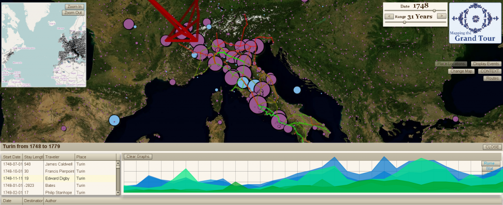

A subproject of Mapping the Republic of Letters, Mapping the Grand Tour aims to track visits to the Italian peninsula during the 18th century.


One of the many iterations of the Flex-based Grand Tour Interface, which uses Modest Maps to deliver historically rectified maps, both custom-projected and WMS.
One of the most visible deliverables from this project is a web interface that allows for navigation and visualization of the newly restructured information, as well as data entry by the scholars involved in the project. The interface is built in Flex, with PHP used to deliver a host of data services to and from the MySQL database. The interface allows users to view and create historical routes, based on integrated geo-rectified historical maps or from external sources such as 18th century travel guides. It also allows users to see the pattern of travel of individual actors based either on their reported location or the location of the objects with which they have been identified (typically letters). Additionally, it affords functionality to allow users to place historical locations which often are not available on modern maps either entirely or with their historical name.
Significant development of geographic resources took place in the ArcGIS environment, including all historic map rectification as well as integration of outside assets for historical political geography and placenames. ArcGIS was further used to perform analysis of spatial patterns in the various historical datasets.